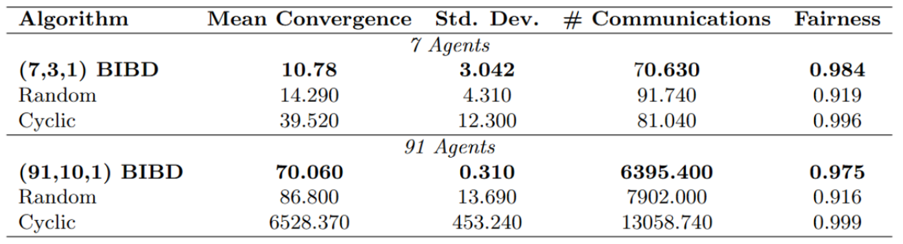
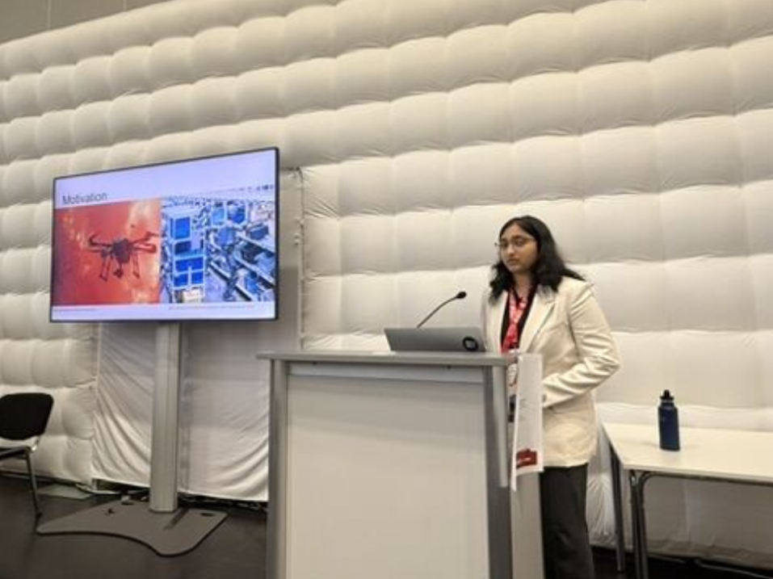

Independent research · January–June 2026
Distributed Communication for Multi-Robot Systems
I did this as an independent project from January to June 2026.
As robot swarms grow larger, communication becomes one of the biggest bottlenecks. My work investigates whether carefully designing who talks to whom can improve coordination, especially when communication is unreliable, such as in robotic environments.
Rather than using randomized communication schedules, I applied Balanced Incomplete Block Designs (BIBDs) to create deterministic schedules that balance information exchange across the swarm. In simulation, for both 7-agent and 91-agent swarms, this approach consistently reached consensus faster than both randomized and cyclic scheduling, particularly in high packet-loss environments.
This method achieved 19.3% faster consensus than randomized scheduling and 98.9% faster consensus than cyclic scheduling at a 0.7 packet-loss probability (91 agents), and 24.6% and 72.7% faster, respectively, on 7-agent swarms.

I presented this paper as the sole author at the International Conference on Robotics and Automation (ICRA) as part of the 2026 Workshop on Connected Autonomous Robotic Systems.

I want to apply this to a real system. I am thinking about multi-agent systems for mapping terrain or coding. I am curious whether varying the communication topology would reduce communication overhead and result in a better final map and less rework. Additionally, another goal would be to remove the assumption that the swarm has to be fully connected.
I learned how to complete a research project and how to present it effectively to a large group of people. I also learned about multi-agent coordination and how to apply concepts from combinatorics to swarm robots.